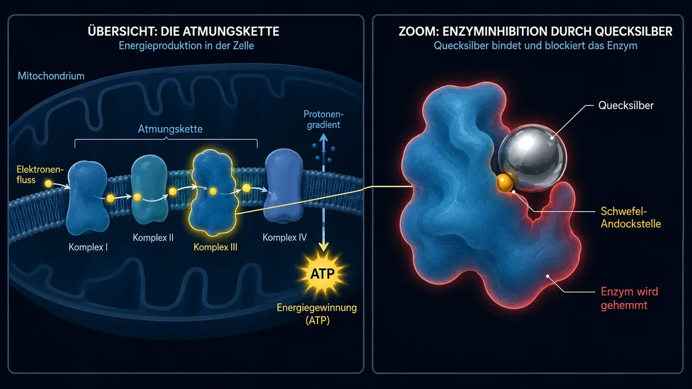

İlaç ve toksin kaynaklı tinnitus (Ototoksisite)
Son güncelleme: Haziran 2026
Ben de o zamanlar son derece şiddetli, cehennem gibi bir tinnitus yaşamıştım. Benim durumumda tinnitusun asıl tetikleyicisi klasik gürültüydü (ilaç kaynaklı akut bir olay değildi); ama nedeni farklı olsa da o sürekli ses, sinirlerime, uykuma ve bütün hayatıma yönelen aynı kalıcı saldırıydı. Doktorlar bana da sık sık bununla yaşamayı öğrenmem gerektiğini söylediler.
Bu makaleyi kimyasal tetikleyiciler üzerine yazıyorum, çünkü konu kendi araştırmalarımda önemli bir rol oynadı. 2012'den beri hücresel biyokimyayla yoğun biçimde ilgileniyorum; toksikoloji ve çevre tıbbı da buna dâhil. İşte tam burada çember tamamlanıyor: Çevre tıbbı uzmanlarının (örneğin Dr. Klinghardt veya Dr. Mutter) pratiğinde sıkça büyüleyici bir olgu gözleniyor. Tinnitus hastalarında gizli bir toksin veya ağır metal yükü belirleyici bir etkense, hedefe yönelik hücresel detoksifikasyon çoğu zaman kulakta duyulan seslerde belirgin ya da hissedilir bir azalma sağlayabilir. Burada bu araştırmalarla ulaştığım kendi anlayışımı paylaşıyorum; bu aynı zamanda, söz konusu araştırmalara dayanarak ileride bu sitede ele alacağımız çözüm yaklaşımlarının temelini oluşturuyor.
İçeriden gelen kimyasal saldırı
Tinnitusu düşündüğümüzde genellikle hemen iki görüntü belirir: gümbür gümbür bir konser (gürültü) ya da yoğun stres, daha özel olarak içsel travmaya bağlı stres (psikosomatik). Oysa mekanik ya da duygusal değil, tamamen kimyasal olan üçüncü bir tetikleyici daha vardır: ilaç veya toksin kaynaklı tinnitus. Bana göre bu tinnitus türü en az görülenlerden biridir; yine de konuyu eksiksiz ele almak için bu üçüncü tetikleyiciyle ilgili kendi bakışımı da anlatmak istiyorum. Bunun tıp dilindeki adı ototoksisitedir (yani “kulağa toksik etki”).
İlk anda biraz soyut gelebilir; fakat iç kulağımız belirli kimyasal maddelere karşı son derece hassastır. Bazı ilaçlar veya çevresel toksinler kan dolaşımı yoluyla doğrudan iç kulağa ulaşabilir ve oradaki hassas tüy hücrelerini ya da işitme sinirini tahriş edebilir, hatta onlara zarar verebilir.
Mekanizma: Kimya nasıl ses üretir?
Aşırı yüklenmenin ardından sürekli olarak gereğinden fazla açık kalan ve artık doğru dürüst kapanmayan, ince tüylerin ucundaki iyon kanalını hatırlayalım. Gürültü travmasında tüy hücresi, mekanik şiddet (ses dalgaları) nedeniyle fiziksel olarak zarar görür ya da eğilip bükülür.
İlaç veya toksin kaynaklı tinnitusta sonuçta çoğu zaman buna çok benzer bir şey olur; yalnız oraya giden yol farklıdır. Kulaktaki her bir tüy hücresini temelde küçük bir biyolojik pil gibi düşünmek gerekir. Bu pil, enerji (ATP), mineraller ve elektriksel gerilim arasında son derece hassas bir dengeyi korur.
Bu hassas denge kimyasal maddeler (çevresel toksinler veya toksik ilaç dozları) tarafından ciddi biçimde bozulduğunda, biyokimya anlayışıma göre hücresel düzeyde şunlar olur:
Hücrenin enerji düzeyi (ATP) düşer. Bunun sonucunda hücre duvarındaki minik pompalar kimyasal dengeyi koruyacak kadar hızlı çalışamaz. Ardından kalsiyum hücrenin içinde birikmeye başlar. Kalsiyum biyolojide uyarı iletimini doğrudan başlatan unsur olduğu için, bu iyon fazlası hücreyi sürekli ve kontrolsüz biçimde “hatalı sinyaller” ateşlemeye zorlar. Bana göre bu mistik bir rastlantı değil, mantıklı bir biyokimyasal otomatizmdir. Beyin, hücrenin durmaksızın ateşlediği bu elektriksel hatalı sinyalleri bir ses olarak algılar.
Tam olarak hangi sesi duyduğun — tiz bir ıslık, bir tıslama ya da pes bir uğultu — çoğu zaman etkilenen tüy hücrelerinin kokleanın (kulak salyangozunun) tam olarak neresinde bulunduğuna bağlıdır. O anda iç kulak çoğu zaman fiziksel olarak tahrip olmaz; ama hassas iç işleyişinin ritmi bozulur.
Elektriksel kısa devreler (İşitme siniri)
Tehlikede olan yalnızca tüy hücreleri değildir; “elektrik kablosunun” kendisi, yani işitme siniri de tehlikededir. Bu sinir, miyelin adı verilen koruyucu bir kılıfla çevrilidir. Bu yalıtım tabakası yağlar ve mineraller açısından son derece zengindir; bu yüzden kanda dolaşan toksinlere karşı özellikle hassastır. Bu kılıf kimyasal stres yüzünden zayıflar ya da “incelirse”, sinir artık sinyalleri temiz biçimde iletemez. Adeta elektriksel “kısa devreler” oluşur.
İşte burada anatomimizin saf mantığı ortaya çıkıyor: İşitme sinirimiz basit, tek bir tel değil; binlerce ince sinir lifinden oluşan kalın bir demettir. Bu liflerin her biri belirli bir ses perdesini iletmekten sorumludur. Toksik kısa devre (miyelin kaybı) tam da yüksek frekanslardan sorumlu sinir lifinde oluşursa, beyin bunu mantıken tiz bir ıslık olarak algılar. Pes seslerden sorumlu bir lif etkilenirse, pes bir uğultu duyarsın. Yani duyduğun şeyin uğultu, tıslama ya da ıslık olması kesinlikle rastlantı değildir; ana kablonun yalıtımının hangi küçücük noktasında hasar gördüğüne büyük ölçüde bağlıdır.
Tinnitusun evrensel yasası
Bütün bu yapboz parçalarını birleştirince merkezi bir ortak payda ortaya çıkıyor: En derin inancıma ve deneyimime göre tinnitus, nihayetinde işitsel bilgiyi işleyen, kronik olarak tahriş olmuş ve aşırı uyarılmış sinirlerin sonucudur. Bu aşırı uyarılmanın başlangıç noktasının tam olarak neresi olduğu fiziksel açıdan neredeyse hiç fark etmez:
- Tüy hücreleri (gürültü veya ilaçlar yüzünden) acil çalışma modunda takılıp işitme sinirini sürekli glutamata boğuyor olabilir…
- Çevresel toksinler ve ağır metaller sinirlerin yalıtımına (miyeline) saldırıp orada doğrudan kısa devrelere yol açıyor olabilir…
- Ya da yoğun, kronik psikosomatik stres beyinde birikip işitsel işlem merkezlerini adeta “yukarıdan aşağıya” sürekli akım altında tutuyor olabilir…
Bu evrensel mantığı bir kez kavradığında tinnitus çoğu zaman gizemini ve korkutucu etkisini tamamen kaybeder.
Deneyimime göre nihai sonuç neredeyse her zaman tamamen aynıdır: Bu bölgedeki sinir sistemi kronik olarak tahriş olmuştur ve durmaksızın elektriksel SOS sinyalleri gönderir. Bu evrensel mantığı bir kez kavradığında tinnitus çoğu zaman gizemini ve korkutucu etkisini tamamen kaybeder; çözüm yolu da bir anda apaçık hâle gelir.
Tipik tetikleyiciler (Ototoksik maddeler)
Ama tamam, devam edelim: Potansiyel olarak ototoksik etki gösterdiği bilinen pek çok madde vardır. (Önemli: Bu, kendi kendine tanı koymak için hazırlanmış tıbbi bir liste değildir; yalnızca genel bilgi vermeyi amaçlar!)
1. İlaçlar
Bazı ilaçlar iç kulağı aşırı uyarabilir. Ama yalnızca adlarını bilmek yetmez; sistemi neden rayından çıkardıklarını anlamak gerekir. Ancak hasarın mekanizmasını kavrarsak daha sonra ele alacağımız yaklaşım (hücre enerjisi ve detoksifikasyon) gerçekten anlam kazanır. En bilinen gruplar arasında şunlar yer alır:
Yüksek doz ağrı kesiciler (özellikle aspirin/ASA)
Önce içini rahatlatayım: Normal bir baş ağrısı tableti genellikle tinnitusa yol açmaz. Araştırmalara göre burada çoğu zaman keskin bir doz paradoksu vardır. Tehlike genellikle ancak gerçekten toksik yüksek dozlarda (çoğu zaman günde birkaç gram) ortaya çıkar. Bu olduğunda farmakolojik modeller, ilacın iç kulakta üç aşamalı bir zincirleme reaksiyon başlattığını düşündürüyor:
- Motor tekliyor: Etken maddenin, dış tüy hücrelerinde bir motor gibi çalışan küçücük bir protein olan prestini bloke ettiği varsayılıyor. Bunun sonucunda kulaktaki akustik yükseltici çöker. Beyin de panik tepkisiyle, hiç değilse bir şeyler duyabilmek için merkezi “ses düğmesini” (Central Gain) çoğu zaman sonuna kadar açar.
- Sinirlerin aşırı duyarlılığı: Aynı anda modeller, ilacın işitme sinirindeki reseptörleri daha yüksek bir uyarılabilirlik durumuna getirdiğini düşündürüyor. Uyarılma eşiği düşer; böylece sinir sistemi en küçük sinyallere bile belirgin biçimde daha hassas tepki verir.
- Elektrik kesintisi (Tetikleyici aşama): Biyokimyasal araştırmalara göre aspirin yüksek dozlarda mitokondrilerde bir “ayırıcı” gibi etki eder. Simgesel olarak hücrenin fişini çeker (ATP eksikliği). İşte tam burada gürültü travmasıyla arasındaki büyüleyici, mantıklı fark yatar: Gürültüde hücrenin ince tüyleri mekanik şiddetle adeta bükülür. Bunun sonucunda kalsiyum kanalı sıkışmış bir kapı gibi sürekli açık kalır ve kalsiyum kontrolsüz biçimde içeri akar. Aspirin doz aşımında bu olmaz. İnce tüyler tamamen sağlam biçimde yerinde durur. Burada dengesi bozulan “yalnızca” kimyadır. Normalden daha fazla kalsiyum içeri girmez; ancak enerji hızla düşünce hücrenin minik kalsiyum pompaları onu tekrar dışarı atmaya yetişemez. Hücre o anda normal kalsiyum yüküyle bile başa çıkamaz hâle gelir. Sonuçta ortaya çıkan şey aynıdır: Kalsiyum içeride birikir ve hücreyi haberci madde glutamatı durmaksızın salgılamaya zorlar.
Olası tinnitus sonucu şudur: Bu kontrolsüz glutamat seli, uyarılma eşiği zaten düşmüş sinirlere (2. aşama) çarpar ve ses düğmesi sonuna kadar açık bir beyne (1. aşama) gönderilir. Kulakları sağır eden kesintisiz bir hatalı sinyal yaylımı başlar. Bu basit hücresel mantık, çoğu doktorun bile çoğu zaman ikna edici bir yanıt bulamadığı gündelik bir olguyu da açıklar: Bir hafta boyunca aşırı dozda aspirin kullanan amcanın ilacı bıraktıktan kısa süre sonra kulağı neden çoğu zaman yeniden sessizleşirken, yalnızca iki kez gürültülü bir diskoya gitmiş 26 yaşındaki yeğeni dört aydır bir türlü geçmeyen tinnitusla yaşar? Bana göre yanıt apaçık ortadadır: Amcada yaşanan biyokimyasal bir elektrik kesintisiydi. İlaç doktorla görüşülerek bırakılıp kan dolaşımından temizlenir temizlenmez hücrenin enerji santralleri yeniden çalışabilir, pompalar kalsiyumu temizler ve sistem yeniden hatasız çalışabilir. Diskoya giden yeğende ise ham, mekanik bir şiddet söz konusuydu. İnce tüyleri fiziksel olarak bükülmüş ya da birbirine yapışmıştır. Bu, bir kapının menteşesini kaba kuvvetle eğip bükmeye benzer; sırf gürültü sona erdi diye tek bir hafta sonu içinde kendiliğinden düzelmez.
Bazı antibiyotikler (aminoglikozidler)
Bu güçlü antibiyotikler genellikle yalnızca ağır bakteriyel enfeksiyonlarda hastanede kullanılır (örneğin gentamisin). Son derece sinsi bir özellikleri vardır: Çoğu zaman özellikle iç kulak sıvısında birikir ve oradan ancak işkence edercesine yavaş uzaklaştırılırlar; haftalarca ya da aylarca orada kalabilirler. Burada vücuttaki demirle tepkimeye girerler ve büyük bir “serbest radikal” (ROS) patlaması yaratırlar. Bu, hassas hücre zarlarına ve ince tüylerin iç aktin iskeletine saldıran biyokimyasal bir yangın gibidir. Burada iki sonuçlu basit bir biyolojik mantık işler:
- 1. sonuç (Hücre ölümü): Vücut o sırada zaten zayıfsa, besin kaynakları çok azsa ya da önceden hasar varsa, hücre bu kimyasal yangın altında tamamen çöker ve ölür (apoptoz). Paradoksal sonuç şudur: Bu durumda genellikle tinnitus oluşmaz. Ölü bir hücre artık sinyal göndermez. Bunun yerine tam o frekansta, tinnitusun eşlik etmediği bir işitme kaybı (sağırlık) oluşur.
- 2. sonuç (Hayatta kalma mücadelesi = Tinnitus): Hücre saldırıdan kıl payı kurtulur; ama yapısal olarak ağır hasarlı kalır. Temelde gürültü travmasının aynısıdır, yalnızca tamamen kimyasal yoldan tetiklenmiştir. Sert iç iskelet (aktin) çöker ve bunun sonucunda ince tüyler susuz çiçekler gibi solar. Ama hücre hâlâ canlıdır! Canlı olduğu için, delik deşik zardan içeri akan kalsiyuma karşı umutsuzca savaşmaya çalışır. Bu iyon akışı uyarı iletiminin doğrudan kimyasal emri olduğundan, ağır hasarlı hücre sürekli panik modunda işitme sinirine durmaksızın haberci madde glutamatı salgılamaya zorlanır. Bu hücresel hayatta kalma mücadelesi kesintisiz bir elektriksel hatalı sinyal yaylımına dönüşür; sen de tam olarak bunu tinnitus olarak algılarsın.
Diüretikler (güçlü idrar söktürücü ilaçlar)
Loop (kıvrım) diüretikleri vücuttan yalnızca suyu atmakla kalmaz, potasyum ve sodyum gibi elektrolitleri de büyük miktarda uzaklaştırır. Sorun mu? İç kulağın stria vaskülaris adı verilen kendine ait küçük bir gerilim kaynağı vardır. Bu doku tabakası, sabit bir elektriksel gerilimi korumak için kulak sıvısına durmaksızın potasyum pompalar; tüy hücrelerinin işitmek için kullandığı akımı sağlayan pil budur. İdrar söktürücü ilaçlar tam olarak bu biyokimyasal pompa mekanizmasını bloke eder. Bunun sonucunda kulaktaki elektriksel gerilim ciddi biçimde düşer. Biyolojik pil bir anda “boşalır” ve işitme sistemi kaotik bir alarm durumuna girip bu alarmı uğultu ya da ıslık biçiminde dışa vurur.
Kemoterapi ilaçları (sisplatin gibi)
Bu agresif kanser ilaçları çoğu zaman platine (bir ağır metal) dayanır. Hücrelerin DNA'sına müdahale etmek üzere tasarlanmışlardır. Ancak bu ilaç yüzünden bir tinnitus tablosu ortaya çıkarsa, farmakolojik modellere göre bunun nedeni iç kulakta her yanı saran gerçek bir biyokimyasal yangındır: Sisplatin bu durumda hücrenin en önemli doğal koruyucu maddesini (glutatyonu) tamamen elinden alır. Bu koruyucu kalkan olmadan serbest radikaller hücre zarını kemirerek mikroskobik delikler açar ve iyon pompalarını yok eder. Sonuç, aşırı bir iyon dengesizliğidir: Kalsiyum hücreye adeta sel gibi dolar ve onu glutamatı kesintisiz bir yaylım hâlinde salgılamaya zorlar. Sisplatin aynı zamanda güçlü biçimde nörotoksiktir ve işitme sinirinin miyelin tabakasını (yalıtımını) adeta parçalar. Hasarlı hücrenin kesintisiz glutamat yaylımı korumasız, çıplak kalmış bir sinire çarptığında, beyne giden ana kablonun üzerinde gerçek, ölçülebilir kısa devreler ve hatalı ateşlemeler oluşur. Burada da tinnitus açısından biyolojik bir yol ayrımı vardır: Hücre tamamen yok olursa (apoptoz), genellikle sessizlik (sağırlık) oluşur. Sızdıran zarları ve çıplak sinirleri olan ağır hasarlı bir harabe olarak hayatta kalırsa, çoğu zaman kalıcı bir parazit sinyali yayar. Kemoterapi tinnitusunun neden çoğu zaman son derece inatçı olduğunu bu açıklar.
Kinin (Sıtma ilacı ve kas kramplarına karşı preparatlar)
Kinin damarları güçlü biçimde daraltır. İç kulak mutlak bir anatomik çıkmazdır; kanı yalnızca tek bir küçücük arterden, labirent arterinden (Arteria labyrinthi) alır. Burada hiçbir “alternatif yol” yoktur. Kinin bu küçücük arteri daraltıp aynı anda alyuvarları daha az esnek hâle getirince kan akışı aksar. Böylece tüy hücrelerinin yaşamsal oksijen ve besin kaynağı kesilir. Tüy hücreleri şiddetli oksijensizlik yaşar ve hemen tinnitusa yol açan bir panik moduna geçer.
2. Ağır metaller ve çevresel toksinler
Cıva, kurşun, alüminyum veya kadmiyum gibi ağır metaller hücresel düzeyde son derece saldırgan sabotajcılar gibi davranır. Kapsamlı detoksifikasyon protokolleriyle ilgilenen herkes şunu bilir: İç kulak hücrelerini yalnızca belirsiz ve yaygın bir biçimde zehirlemezler; biyolojik süreçlerin tam içine sızar ve onları bloke ederler. Bu, kokleada ve işitme sinirinde son derece yıkıcı dört mekanizma üzerinden gerçekleşir:
- 01Truva atı
- 02Tiyol sabotajı
- 03Yıkım topu
- 04Miyelin parçalayıcı
Mekanizma 1: Truva atı (Eser elementlerin yerinden edilmesi)
Kadmiyum ve cıva gibi metaller, başta çinko ve selenyum olmak üzere yaşamsal eser elementlere kimyasal açıdan çoğu zaman şaşırtıcı biçimde benzer. Vücut buna aldanır ve proteinlere çinko yerine ağır metali yerleştirir. Sonuç vahimdir: Çinko, işitme sinirinin reseptörlerinde bir tür doğal “fren” görevi görür. Sinirin her küçücük uyarana hemen aşırı tepki vermesini engeller. Bu çinko bir ağır metal tarafından yerinden edilirse fren tamamen devre dışı kalır. Akustik sinyaller frensiz biçimde sinir sistemine çarpar; bu da deneyimime göre kulakları sağır eden bir tinnitus olarak kendini gösterir. Aynı anda selenyumun yerinden edilmesi, vücudun kendi ürettiği en önemli antioksidanın (glutatyonun) üretimini ciddi biçimde bozar. Hücresel koruma çökme tehdidiyle karşı karşıya kalır.
Mekanizma 2: Tiyol sabotajı (Protein yapısının eğilip bükülmesi)

Ağır metallerin ayrıca kükürde karşı çok güçlü bir kimyasal ilgisi vardır. Enzimlerimizin ve minik hücre pompalarımızın çoğunda (ATP ile çalışan kalsiyum pompaları gibi) tiyol grupları (-SH) adı verilen, kükürt içeren bağlanma noktaları bulunur. Ağır metal iç kulağa ulaştığında hemen bu kükürt gruplarına tutunur. Metal enzimle birleştiği anda protein, üç boyutlu yapısını değiştirmek zorunda kalır; kelimenin tam anlamıyla eğilip bükülür. Bunun sonucunda tüy hücresinin kalsiyum pompası bloke olur ve işlevini yitirir.
Mekanizma 3: Biyolojik yıkım topu (Doğrudan hücre yıkımı)
Metaller, pompaları sabote etmenin yanı sıra hücrenin donanımına doğrudan ve fiziksel olarak da saldırır. Kurşun ve kadmiyum mitokondrilere (hücrenin enerji santrallerine) girer, hücresel solunum zincirine yerleşir ve ATP üretimini ciddi biçimde boğar. Hücre, mecazi anlamda, içeriden boğulma tehlikesi yaşar. Metaller aynı anda kulakta bir serbest radikal patlaması başlatır; bu radikaller tüy hücresinin yağlı koruyucu kılıfını (zarını) adeta okside eder. Zar acılaşır, erir ve delik deşik olur (lipid peroksidasyonu). Toksik kalsiyum, yıkılmış bir setten geçer gibi içeri akar. Metaller ayrıca küçücük duyu tüylerinin içindeki sert protein iskeletine (aktine) saldırır. Moleküler köprüler kopar; tüyler solar, bükülür ve uyarı kanallarını kalıcı olarak açık konumda kilitler.
Mekanizma 4: Miyelin parçalayıcı (Ana kabloya saldırı)
Ağır metaller kablonun kendisini — işitme sinirini — de doğrudan kemirir ve yalıtım tabakası olan miyelini yok eder. Bu tabaka neredeyse %80 oranında yağdan oluşur; bu da onu oksidatif stres için kusursuz bir hedef hâline getirir. Serbest radikaller yağı adeta aşındırıp yok eder. Örneğin cıva, yalıtım tabakasının moleküler yapıştırıcısı olan “Myelin Basic Protein”e (miyelin bazik proteinine, MBP) bağlanır ve tabakanın pul pul dökülmesine yol açar. Toksikolojide kurşunun bir adım daha ileri giderek Schwann hücrelerine özellikle zarar verdiğine dair güçlü bir şüphe vardır; bunlar aslında miyelini onarması gereken minik işçilerdir. Yalıtım olmayınca işitmenin elektriksel sinyalleri ciddi biçimde yavaşlar, komşu ve çıplak kalmış sinir liflerine atlar (Cross-Talk) ve şiddetli hatalı ateşlemeler yaratır.
-
01Kimyasal giriş
Toksik olacak kadar yüksek dozda bir ilaç veya ağır metal/çevresel toksin kan dolaşımı yoluyla iç kulağa ulaşır.
-
02Denge bozulur
ATP düşer, pompalar yetişemez, kalsiyum hücrenin içinde birikir, miyelin incelir.
-
03Sürekli hatalı sinyal
Zayıflamış hücre sürekli olarak glutamat salgılar ya da sinyaller komşu liflere atlar; beyin bunu bir ses olarak algılar.
Peki neden herkeste tinnitus oluşmuyor? (Ağır metal piyangosu ve mükemmel fırtına)
Bu noktada akla mantıklı bir soru geliyor: Cıva (balıktan veya amalgamdan), kurşun (eski borulardan) ve benzerleri bu kadar yıkıcı biçimde ortalığı kasıp kavuruyorsa, neden insanlığın yarısında ton balıklı pizza yedikten hemen sonra tinnitus oluşmuyor? Yanıt, vücudumuzun kendi koruyucu kalkanlarında, gerçek bir biyolojik piyangoda ve tinnitusun neredeyse hiçbir zaman tek, yalıtılmış bir etken tarafından tetiklenmemesi gerçeğinde yatıyor.
1. Toksikolojik piyango (Yerel zayıf nokta):
Ağır metallerin kulak için yerleşik bir GPS sistemi yoktur. Kanda körlemesine dolaşır ve en az direnç gösteren yeri (locus minoris resistentiae) ararlar. Nereye birikecekleri çoğu zaman tamamen rastlantıdır ve vücudunun o sırada nerede zayıf bir noktası olduğuna bağlıdır. Örneğin geceleri dişlerini çok şiddetli gıcırdatıyorsan ya da boyun-çene bölgesinde sessiz bir iltihap varsa, kulağının çevresindeki damar geçirgenliği son derece yüksektir. Normalde kulağı koruması gereken kan-labirent bariyeri o zaman ardına kadar açık kalır. Cıva bu açık kapıyı bulup tam orada işitme sinirine yerleşirken, başka bir kişide belki de yoluna devam eder.
2. Vücudun kendi çöplüğü, glutatyon kalkanı ve başlangıç yükü:
Sağlıklı bir vücut karaciğerde bol miktarda glutatyon üretir; bu molekül ağır metalleri kelepçeler gibi bağlayıp daha kulağa ulaşmadan vücuttan atar. Ama işin içine maruziyetin sert gerçeği girer: Bazı insanlar, çoğu zaman bundan hiç haberi olmadan, ağır metallerle başkalarına göre çok daha fazla temas eder. Kirli hava, ağızdaki eski amalgam dolgular, iş yeri, sigara, ağır metal içeren gıdalar ya da kirlenmiş gündelik eşyalarla sürekli temas buna yol açabilir. Sonuçta tablo her zaman, maruz kalınan miktarın büyüklüğüyle vücudun bu toksinleri bağlayıp dışarı atabilme yeteneğinin birleşiminden oluşur. Vücut bunu başaramazsa, toksinleri kan dolaşımından çekmek için onları çoğu zaman sözde güvenli “depolarda” (kemikler veya klasik yağ dokusu gibi) biriktirir. İşte tam burada işitmemiz için ölümcül bir biyolojik tuzak gizlenir: Sinir sistemimiz — özellikle de işitme sinirinin yalıtıcı miyelin tabakası — neredeyse %80 oranında saf yağlardan oluşur. Vücut lipofilik (yağda çözünen) ağır metalleri yağ dokusunda umutsuzca “geçici olarak park etmeye” çalışınca, bu biyolojik piyangonun talihsiz bir sonucu olarak çoğu zaman tam da bu son derece hassas sinir dokusu ya da tüy hücrelerinin çevresindeki yapılar hedef olur.
Buna sert ve çoğu zaman dile getirilmeyen bir biyolojik gerçek daha eklenir: Pek çok insan bu toksik piyangoya daha doğduğu gün dolu bir depoyla girer. Neden mi? Çünkü araştırmalar, annelerin gebelik sırasında yıllar içinde biriktirdikleri kendi ağır metal depolarının bir bölümünü plasenta yoluyla fetüse aktardığını düşündürüyor. Yani bazılarında hücresel fıçı daha başlangıçta bile belirgin biçimde daha doludur.
Sonunda bu koruma sistemi çöktüğünde tehlike başlar: Aşırı stres, genetik veya besin eksikliği yüzünden detoksifikasyon sistemi bir anda kapasitesinin sınırına dayanır. Vücudun kendi depoları açılır ya da yeni gelen toksin daha baştan yakalanamaz; kanda dolaşır ve sözünü ettiğimiz piyangoda olduğu gibi, kaçınılmaz biçimde vücudun zayıf noktasını arar.
3. Ölümcül birleşim (Mükemmel fırtına):
Ancak biyolojik gerçeklikte burada çoğu zaman son derece karmaşık bir bileşim görürüz. Bu, bir gürültü olayının ardından tinnitus yaşayan herkesin otomatik olarak ağır metallerle tamamen zehirlenmiş olması gerektiği yanılgısını da ortadan kaldırır. Durum böyle değildir.
Çoğu zaman daha çok şu olur: Çevresel toksinler veya ağır metaller nedeniyle bir kişinin tüy hücrelerinde, bunların mitokondrilerinde ya da doğrudan işitme sinirinde zaten belirli bir toksik yük bulunur. Miyelin tabakası belki şimdiden biraz incelmiştir; kalsiyum pompaları kapasite sınırına yakın çalışıyordur ya da hücreler sınırda var gücüyle çalışıyordur. Tek başına bu durum çoğu zaman henüz kalıcı bir tinnitusa yol açmaz. Vücut bunu tamponlar ve adeta bir ipin üzerinde zar zor dengede kalır.
Ama sonra hayatın getirdiği etkenlerin birleşimi devreye girer: Aşırı kronik stresin yaşandığı bir döneme girersin. Stres hormonları (adrenalin/kortizol) kan damarlarını daraltır, kulaktaki kan akışını ciddi biçimde azaltır ve onarım sağlayan uykunu elinden alır. Sistem geceleri artık kendini yenileyemez. Tam da bu son derece savunmasız durumdayken bir de gürültüye maruz kalırsan (ister ani ve yüksek şiddetli bir gürültü, ister kronik ve sürekli ses yükü olsun), zincirin bir noktasında sistem kesin olarak çöker. Önceden hasar görmüş donanım bu mekanik şiddeti artık kaldıramaz. İyon dengesi bozulur, aktin iskeleti çöker ya da miyelin tabakası sonunda tamamen iflas eder; böylece kesintisiz elektriksel sinyaller oluşabilir.
Bana göre ölümcül birleşim budur: Toksin donanımı sinsice zayıflatır, stres oksijen akışını keser ve gürültü çoğu zaman zaten ağzına kadar dolu hücresel fıçıyı taşıran son damladır.
Bana göre spektrumun diğer ucunda, yalnızca toksik ilaçların ya da ciddi bir ağır metal zehirlenmesinin tetiklediği tinnitus elbette vardır. Kimyasal doz yeterince yüksekse (örneğin agresif kemoterapi veya akut zehirlenmelerde), kesinlikle bir “mükemmel fırtınaya” da ek bir gürültü olayına da ihtiyaç yoktur. Bu vakalarda toksin tek başına hücrenin enerji santrallerini devre dışı bırakmaya ya da sinirlere zarar vermeye tamamen yeter.
Toksin kaynaklı tinnitus (ağır metaller ve pestisitler) neden çoğu zaman bu kadar inatçıdır?
Gürültüden kaçınan kişi tetikleyiciyi hemen durdurur. Toksin kaynaklı tinnitusta — burada özellikle gerçek çevresel toksinler, pestisitler veya ağır metallerden kaynaklanan yükü kastediyorum — durum çoğu zaman belirgin biçimde daha karmaşıktır. Bu tür tinnitus, özellikle bu maddelerin gerçekten ana mekanizma ya da tinnitus tablosunda başlıca etkenlerden biri olduğu ortaya çıkarsa son derece dirençli ve inatçı hâle gelir. Bunun nedeni, bu maddelerin sinir dokusuna ve hücrelere çok derin biçimde yerleşmesidir. Normal bir ağrı kesici gibi birkaç saat sonra kan dolaşımından öylece kaybolmazlar. Sıkıca tutunurlar; vücut bu inatçı toksinleri çoğu zaman ancak büyük güçlükle, son derece yavaş ve uzun bir süre içinde yeniden dışarı atabilir.
Ne yapılabilir?
Peki şimdi ne yapılabilir? Burada anlatılan mekanizmalarla ilgili bilimsel ve uygulamaya dayalı kanıtları kaynaklar sayfamda bulabilirsin. Konuyu daha derinlemesine incelemek ve benim görüşüme ve deneyimime göre ilaç ya da toksin kaynaklı tinnitusta somut olarak nelerin yardımcı olduğunu öğrenmek istiyorsan aşağıdaki bağlantıya tıklayabilirsin:
Önemli uyarı
Reçeteli ilaçları asla kendi başına bırakma! İlaç kullanımıyla bağlantılı olarak kulağında sesler duyuyorsan — özellikle de bu sesler aniden başladıysa — sonraki adımları netleştirmek için lütfen gecikmeden bir doktora danış. İlaçlarında yapılacak her türlü değişiklik doktor gözetiminde olmalıdır.
Bu sitede paylaşılan içerikler, açıklama modelleri ve stratejiler tıbbi danışmanlık değildir; kişisel deneyimlerimden ve kendi araştırmalarımdan oluşur. Her insanın vücudu farklıdır. Doktor değilim ve iyileşme vaadinde bulunmuyorum. Sağlıkla ilgili şikâyetlerin varsa lütfen yetkin bir doktora danış. Burada anlatılan yaklaşımları uygulama sorumluluğu sana aittir.